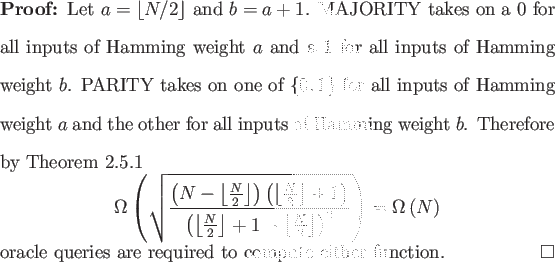

It is tempting to hope that all Boolean functions, or at least all symmetric Boolean functions, realize the quadratic speedup of AND and OR. Unfortunately the functions MAJORITY and PARITY show that for some problems the speedup is at best a constant factor.
MAJORITY is the N-bit Boolean function that evaluates to 1 if and only if more than half of the input bits are 1. PARITY is the N-bit Boolean function that evaluates to 1 if and only if the input has an even Hamming weight.

Since both classical and quantum algorithms can compute any function of N bits with N oracle queries, this lower bound is asymptotically tight. Beals et al. previously proved these results [2]; again, the simplicity that Ambainis' Theorem affords is the main point of interest.